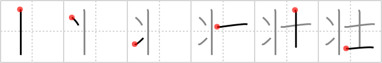

壮
← →
robust

Reading:
On-Yomi: ソウ — Kun-Yomi: さかん
Heisig story:
Robust is seen as a turtle turned samurai.
Koohii stories:
1) [bendyarm] 13-4-2011(160): The image is a robust green bulging-muscle cartoon turtle. A TMNT with hachimaki. turtle-samurai.
2) [NooNoo] 25-4-2008(69): The Teenage Mutant Ninja Turtles are robust gentlemen aren't they?
3) [dwhitman] 8-10-2007(44): Turtle samurai are more robust than regular samurai, because of their shells. (I'm trying to avoid TMNT here, because I tend to get the order of the primitives wrong. It's TURTLE SAMURAI, not Ninga Turtles).
4) [zodiac] 24-10-2008(19): The back of a samurai is very robust.
5) [Cirion] 20-7-2008(13): A hairy leg is a good sign that a gentleman (or samurai) is robust with plenty of testosterone.